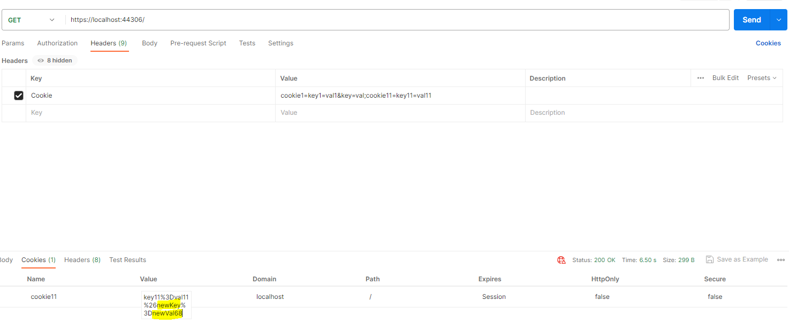

AspNetCore服务端读写浏览器Cookie
现在大部分的Web网站都应该采用了前后端分离的架构，所以一般服务端都不用处理浏览器cookie相关的逻辑，前端根据需要将cookie数据以特定Http Request Header/Body的形式传给服务端API，并将API返回的Http Response Header以及Body的内容按需写入cookie。但凡事总有例外，如果前端和后端都是按照不同的功能模块以微服务的架构进行拆分，那么前端的多个不同页面很可能是由多个不同的开发团队来进行开发和部署的。对于某个特定模块的后端API被多个不同的前端页面调用，而该后端API若想通过浏览器cookie来在客户端和服务端之间保持一个特定的状态标识，就需要考虑如何实现可以将改动的范围限制在最小。一般情况下浏览器发起API请求默认都会带上cookie（跨域请求也可以主动传递cookie），所以主要改动还是各个页面将API返回的状态标识回写到cookie。为了不让调用API的每个页面（团队）都增加回写cookie的逻辑，可以仅在该服务端进行cookie更新设定，这样只需要修改一处，主要就是借助Http Response的Set-Cookie来实现。
另外需要修改的cookie很可能是多个页面模块共享，所以在修改cookie时，为了不破坏cookie原来的结构，或者说做到无损修改cookie，服务端在更新cookie之前，首先要找到目标cookie并解析原有的值。
PS:这里假设服务端是采用的是AspNetCore WebApi。
¶服务端解析cookie
¶单个API里解析cookie
方法一：
最先想到的是直接解析HttpRequest的Cookie头，比如有如下的一个API来根据传入参数来解析对应的cookie的值。
1 | [] |
若使用如下的请求参数：
1 | curl -k --location 'https://localhost:44306/demo/cookie/parse/cookie1' \ |
Note: 如果执行curl命令遇到证书认证的问题，可以增加-k参数关闭证书认证。
将会得到这样的返回结果
1 | {"key1":["val1"],"key":["val"]} |
顺便说一下，即使请求头里包含不同的值的2个Cookie头，API里拿到的也是合并的Cookie请求内容。
1 | curl -k --location 'https://localhost:44306/demo/cookie/parse/cookie2' \ |
API里Request.Headers[“Cookie”]得到的内容是
1 | cookie1=key1=val1&key=val;cookie11=key11=val11; cookie2=key2=val2&key22=val22 |
所以得到返回结果是
1 | {"key2":["val2"],"key22":["val22"]} |
方法二：
我们可以借助Request.Cookies（类型IRequestCookieCollection）来获取已经解析好的Cookie键值对列表，这样就省去了自己去解析的过程。
1 | [] |
测试结果跟方法一是一致的
1 | Request: |
如果所有的API都需要解析cookie的话，可以考虑把上面的代码放到middleware里实现，Http Request可以通过HttpContext.Request来获取。
¶服务端更新cookie
前一部分实现了在服务端解析cookie，我们看下如何在服务端更新指定的cookie，准确的说是往指定的cookie里插入一个特定的key/value（若存在就更新）。更新cookie的逻辑既可以针对某个特定的API，也可以在middleware里对所有的Http请求进行统一处理。下面我们看下如何在middleware里对cookie进行更新。
示例代码如下：
1 | public class UpsertCookieMiddleware |
注意：如果按照正常的逻辑，用如下的代码往Http Response里写入cookie：
1 | public async Task Invoke(HttpContext context) |
运行代码后发现，会报下面这个错误：
The response headers cannot be modified because the response has already started.
所以往Http Response回写cookie必须要在Response开始生成之前，我们可以借助context.Response.OnStarting()[1]来实现。context.Response.OnStarting()用来注册一个回调callback，在Response开始生成之前会被执行，回调的执行顺序与注册顺序相反，意思就是最后注册的回调，最先被执行。
通过Postman测试可以发现Response里有回写的cookie内容了。

另外，如果需求是目标cookie的upsert需要基于Request传入的cookie值，那如果目标cookie的值被其他的middleware或者WebApi修改了，我们需要将其删除后，重新进行upsert。示例代码如下[2]：
1 | var setCookieHeaders = context.Response.GetTypedHeaders().SetCookie; |
以上就是AspNetCore服务端读写cookie的内容。
¶结语
服务端读写cookie在传统的AspNet MVC架构是十分常规的操作，本篇借助了context.Response.OnStarting()注册回调来将cookie回写到Response中，这种实现方式相对优雅一些。
¶源码
Demo代码已上传 https://github.com/jeremyLJ/aspnetcore_read_write_cookie
¶参考资料
- https://www.codeguru.com/dotnet/asp-net-cookies/
- https://learn.microsoft.com/en-us/aspnet/core/fundamentals/middleware
- https://learn.microsoft.com/en-us/aspnet/core/fundamentals/middleware/write